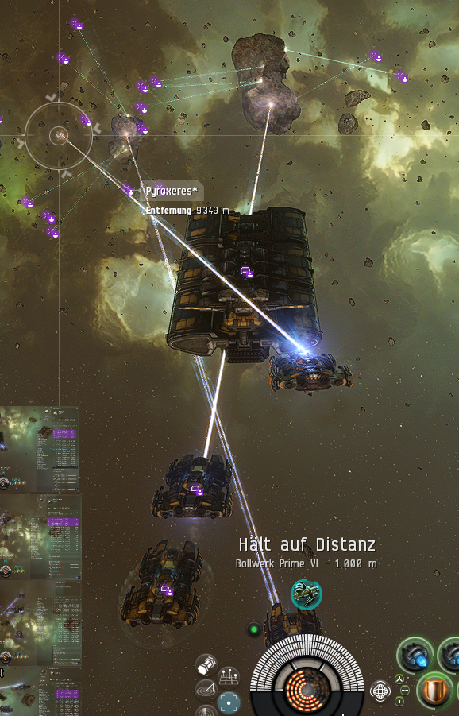
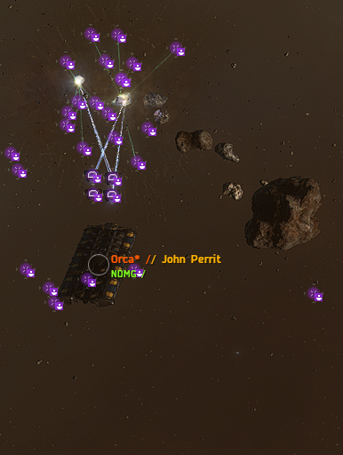
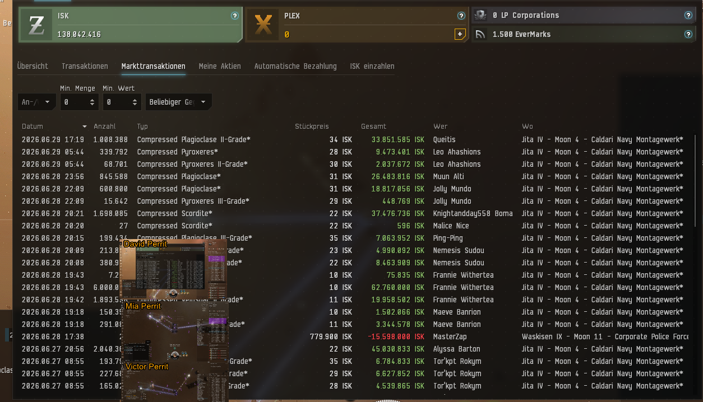
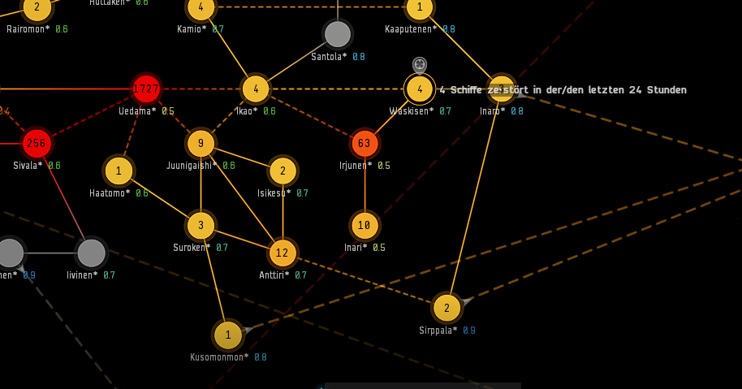
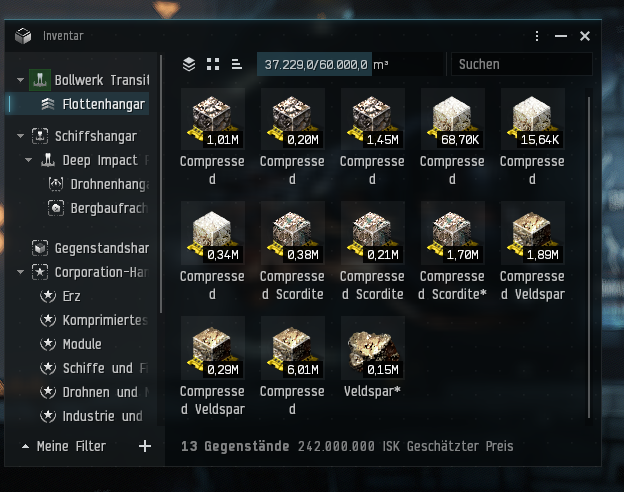
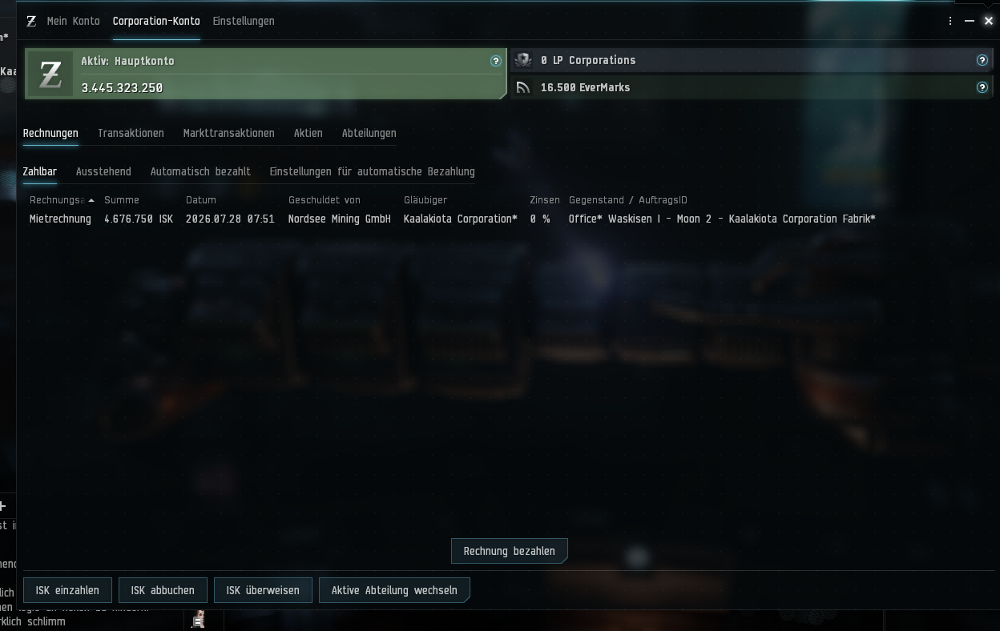

Aus Erz werden Geschichten. Zwischen Orca, Skiffs, Jita-Transporten und gelben Totenköpfen entsteht das Tagebuch einer kleinen Miningfirma in New Eden.
● Mining aktiv
Waskisen
1 Orca · 4 Skiffs · 1 Occator
Erz rein – ISK raus
Was als Rückkehr nach vielen Jahren begann, entwickelte sich schnell zu einem neuen Ziel: eine eigene kleine Miningfirma im Highsec aufzubauen.
Waskisen wurde zum Heimatsystem der Nordsee Mining GmbH. Genug Asteroidengürtel, gute Anbindung und Platz für eine wachsende Flotte.
Die Occator flog mit wertvoller Ladung nach Jita. Beim Andocken wurde der Bildschirm schwarz. Am Ende war alles sicher – und kurz darauf klingelte die Kasse.
Er taucht auf. Er blinkt gelb. Er verschwindet wieder. Bis heute bleibt er ein fester Bestandteil der Sicherheitsberichte von Waskisen.
Orca · Herzstück der Flotte · Kommandoschiff im Belt
Vier robuste Abbauschiffe mit Mining Drone II und Orca-Unterstützung.
Occator · Transporter nach Jita · Lebensader der Logistik.
Drake · Missionsschiff · bewaffnete Erinnerung, dass New Eden nicht immer friedlich ist.

Flotte im Belt
Der letzte Asteroid
Jita-Verkäufe
Waskisen Sicherheitslage
Bollwerk Transit beladen
FirmenkontoErste Bilddokumente aus dem Archiv der Nordsee Mining GmbH: Flottenbetrieb, Logistik, Jita-Verkäufe, Sicherheitslage und Firmenvermögen.
Aktuelle Einstufung: Grün bis Gelb
Waskisen bleibt ein gutes Heimatsystem, dennoch wird Local regelmäßig beobachtet.
Besondere Aufmerksamkeit gilt bekannten Stammgästen und auffälligen Verdächtigen im System.